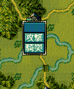

void カスタム::On_戦闘コマンド表示直前《戦争画面》(int 武将番号) {
}

void カスタム::On_戦闘コマンド表示直前《戦争画面》(int 武将番号) {
int iBushouID = 武将番号-1; // 武将番号→武将番号【配列用】に
if ( 0 <= iBushouID && iBushouID < 最大数::武将情報::配列数 ) {
if ( p武将戸籍情報[iBushouID].顔番号 == 顔番号::武田晴信 ) { // 武田信玄の顔＆列伝番号
if ( Get_天気() == 天気::雨 ) {
Set_コマンド名(戦争画面::戦闘コマンド名::通常攻撃, "雨攻撃");
Set_コマンド名(戦争画面::戦闘コマンド名::一斉攻撃, "雨一斉");
}
else if ( Get_天気() == 天気::雪 ) {
Set_コマンド名(戦争画面::戦闘コマンド名::通常攻撃, "雪攻撃");
Set_コマンド名(戦争画面::戦闘コマンド名::一斉攻撃, "雪一斉");
}
} else if ( Get_名字(iBushouID)+Get_名前(iBushouID) == "自作太郎" ) { // 自作太郎という名前だったら…
// 年齢に応じて、コマンド名をダイナミックに変更する。
string header[11] = { "", "", "二十", "三十", "四十", "五十", "六十", "七十", "八十", "九十", "百" };
int header_num = sizeof(header)/sizeof(header[0]); // 上の定義は何個あるか出しておく。
int iGenerations = Get_武将年齢(iBushouID) / 10; // 年齢を十で割る。何十代かを出す。
if ( iGenerations >= header_num ) { iGenerations = header_num-1; } // 110才以上の対処
Set_コマンド名(戦争画面::戦闘コマンド名::突撃, header[iGenerations]+"突撃");
}
}
}